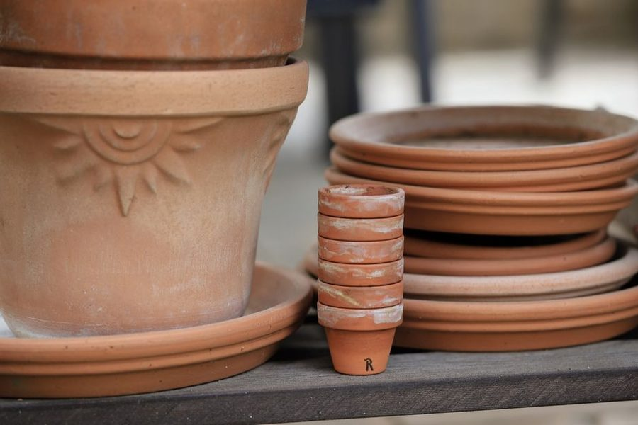

Anotado a 20 de Março · leitura de 4 minutos
O vaso bonito sem dreno e o que fazer com ele
Não é preciso deitar fora o vaso bonito. É preciso deixar de plantar dentro dele.

O vaso de cerâmica pintada que veio de oferta quase nunca tem furo. Planta-se lá dentro por ser bonito, rega-se como nos outros e, ao terceiro mês, a raiz está preta. A água não tem para onde ir e a terra deixa de ter ar.
A solução do vaso duplo
Plante num vaso de plástico com furos, de diâmetro ligeiramente menor, e encaixe-o dentro do decorativo. Na hora da rega tira-se o interior, rega-se ao lume de água ou por cima, deixa-se escorrer cinco minutos e volta-se a encaixar. O bonito fica à vista, a raiz respira.
Se a diferença de altura for grande, calce o fundo com uma base rígida — nunca com esferovite solta, que flutua e desequilibra. O objectivo é que o vaso interior nunca fique assente na água que escorreu.
Furar, quando dá
Barro e cerâmica não vidrada furam-se com broca de vídea, à velocidade mais baixa, com o vaso apoiado e a zona molhada. Cerâmica vidrada estala com facilidade e raramente vale a pena. Plástico fura-se com qualquer broca ou com a ponta quente de um ferro de soldar.
Nos vasos grandes de plástico, três a cinco furos de oito milímetros no fundo e mais dois na lateral, a um centímetro da base, drenam melhor do que um furo central único que entope com terra.
Substrato faz metade do trabalho
Terra de saco pura compacta e retém demasiado. Uma mistura simples de substrato universal com perlite ou casca de pinheiro fina, na proporção de três para um, resolve a maior parte dos casos de varanda.
Para suculentas e ervas aromáticas mediterrânicas a proporção muda: metade areia grossa ou pedra-pomes. Alecrim em terra pesada morre no primeiro Inverno chuvoso, mesmo sem ninguém o ter regado.
Tamanho do vaso
Mudar de um vaso de doze para um de trinta centímetros de uma vez é receita para apodrecimento: sobra terra húmida que a raiz não ocupa. Suba dois a quatro centímetros de diâmetro de cada vez e mude quando as raízes já aparecem pelo furo.
O sinal de que está apertado não é a planta parar de crescer — é a água atravessar o vaso em segundos, porque quase só há raiz lá dentro.
Este texto é revisto sempre que a prática na varanda desmente o que aqui está escrito. A data no topo é a da última revisão.